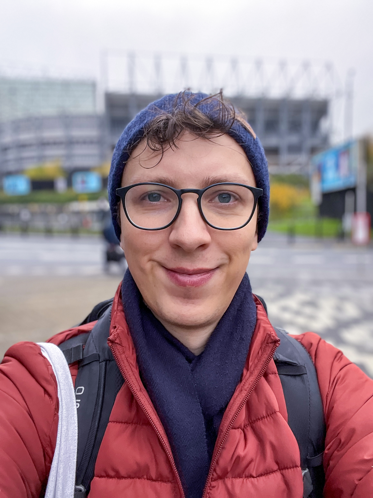

Hello!

I'm Lucas.
I've spent the last 7.5 years working at the intersection of community + journalism at the Bristol Cable.
I have worked across almost every organisational function, from fundraising and membership, to HR and operations.
My work mainly focused on engaging members and developing membership into a sustainable business model: from developing strategies to grow membership, to facilitating community participation, and delivering communications campaigns.
I'm open to freelance work. I'm keen to work with newsrooms who want to develop their membership programmes, deepen community engagement, and grow their revenue.
Get in touch: lucas@lbatt.com